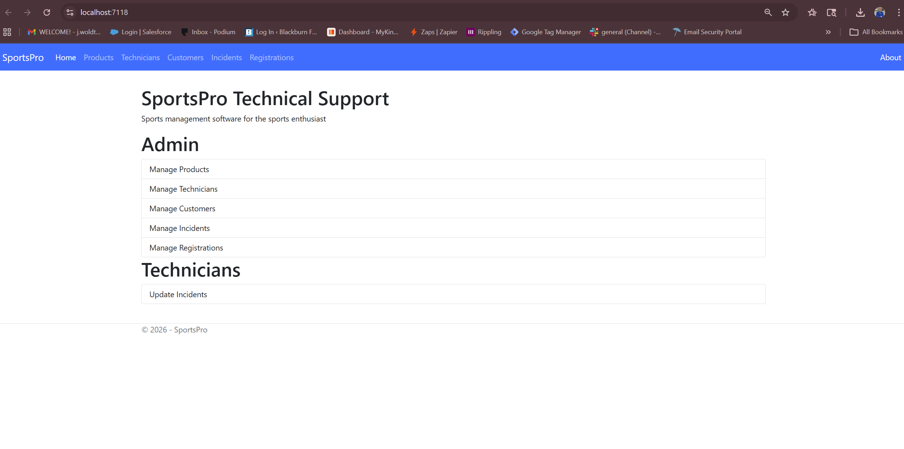

CIS296 C# Project Documentation
SportsPro Technical Support Application
Project Description:
This project is a full-stack ASP.NET Core MVC web application developed as part of a team project in CIS296. The application is designed to manage technical support operations for a sports management system, allowing administrators and technicians to manage products, customers, incidents, and registrations.
Technologies Used:
- C#
- ASP.NET Core MVC
- Entity Framework Core
- SQL Server
- HTML, CSS, Bootstrap
Key Features:
- Admin dashboard for managing products, technicians, customers, and incidents
- CRUD operations (Create, Read, Update, Delete) for all major entities
- Database integration using Entity Framework Core
- Role-based functionality for administrators and technicians
- Clean UI using Bootstrap styling
My Contribution:
As part of a team project, I contributed to building the user interface, implementing form handling, and assisting with controller logic and database interactions. I also participated in testing, debugging, and ensuring the application functioned correctly across different features.
Screen Capture:

Sample Code:
This sample code demonstrates a controller used in the MVC pattern to retrieve data from the database and pass it to a view for display.